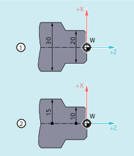

During turning, the dimensions for the transverse axis can be specified in the diameter (①) or in the radius (②):
So that the dimensions from a technical drawing can be transferred directly (without conversion) to the NC program, channel-specific diameter or radius programming is activated using the modal commands DIAMON, DIAM90, DIAMOF, and DIAMCYCOF.
| Note |
The channel-specific diameter/radius programming refers to the geometry axis defined as transverse axis via MD20100 $MC_DIAMETER_AX_DEF (→ see machine manufacturer's specifications). Only one transverse axis per channel can be defined via MD20100. |
| Command for the activation of the independent channel-specific diameter programming. The effect of | |
| Dimensions in the diameter | |
| Dimensions in the diameter | |
| Command for the activation of the dependent channel-specific diameter programming. The effect of | |
| Dimensions in the diameter | |
| Dimensions in the radius | |
| Command for the deactivation of the channel-specific diameter programming Channel-specific radius programming takes effect when diameter programming is deactivated. The effect of | |
| Dimensions in the radius | |
| Dimensions in the radius | |
| Command for the deactivation of channel-specific diameter programming during cycle processing. In this way, computations in the cycle can always be made in the radius. The last G command active in this group remains active for the position indicator and the basic block indicator. | |
| Note |
With |
| Program code | Comment |
|---|---|
| N10 G0 X0 Z0 | ; Approach starting point. |
| N20 DIAMOF | ; Diameter programming off. |
| N30 G1 X30 S2000 M03 F0.7 | ; X axis = transverse axis, radius programming active; traverse to radius position X30. |
| N40 DIAMON | ; The diameter programming is active for the transverse axis. |
| N50 G1 X70 Z-20 | ; Traverse to diameter position X70 and Z-20. |
| N60 Z-30 | |
| N70 DIAM90 | ; Diameter programming for absolute dimensions and radius programming for incremental dimensions. |
| N80 G91 X10 Z-20 | ; Incremental dimensions active. |
| N90 G90 X10 | ; Absolute dimensions active. |
| N100 M30 | ; End of program |